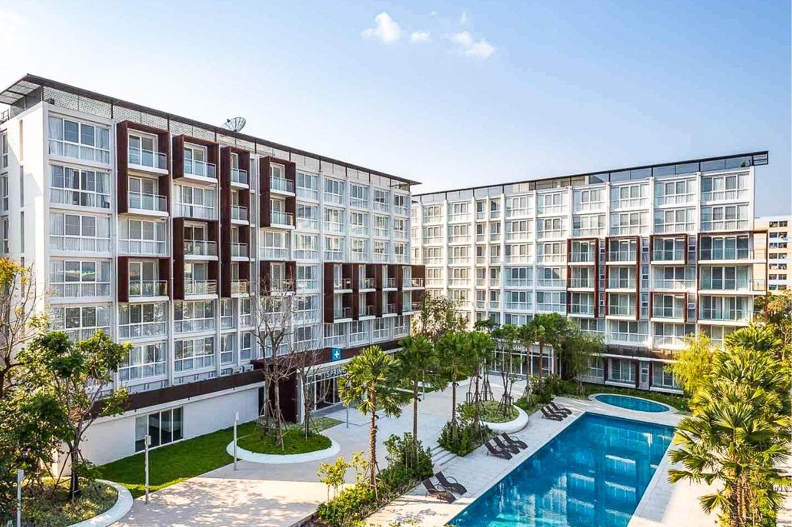

1. โรงแรมอาร์ตมี่ ปทุมธานี
โรงแรมอาร์ตมี่ ปทุมธานี ตั้งอยู่ใจกลางเมืองปทุมธานี มีห้องพักที่สะดวกสบายและทันสมัย พร้อมบริการต่างๆ เช่น สระว่ายน้ำ ฟิตเนส และบริการห้องประชุม
ที่อยู่: 123 ถ. ปทุมธานี-บางขันธ์ ปทุมธานี
ราคาเริ่มต้น: 1,200 บาท/คืน
2. รีสอร์ทน้ำตาลปทุมธานี
รีสอร์ทน้ำตาลปทุมธานี อยู่ท่ามกลางธรรมชาติ บรรยากาศเงียบสงบ เหมาะสำหรับการพักผ่อนและสัมผัสธรรมชาติ มีทั้งห้องพักและบ้านพักสำหรับครอบครัว
ที่อยู่: 45 หมู่ 5 ตำบลท่าทราย อำเภอเมืองปทุมธานี
ราคาเริ่มต้น: 1,500 บาท/คืน
3. โรงแรมปทุมธานีซิตี้
โรงแรมปทุมธานีซิตี้ ตั้งอยู่ใกล้สถานีรถไฟฟ้าและแหล่งช้อปปิ้งต่างๆ มีบริการห้องพักพร้อมอุปกรณ์อำนวยความสะดวกครบครัน และร้านอาหารในโรงแรม
ที่อยู่: 67 ถ. ศรีจันทร์ ปทุมธานี
ราคาเริ่มต้น: 1,000 บาท/คืน